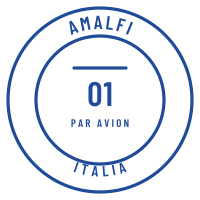
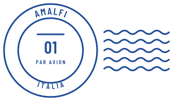
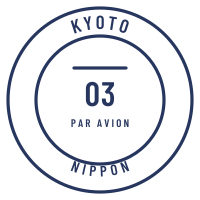
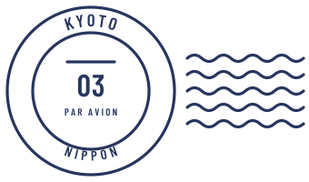
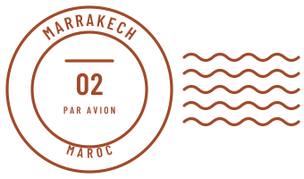
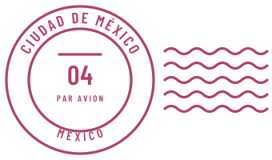

Postmark
Colour
Page ground everywhere: header, sections, modals, the bag drawer. The colour of a good envelope.
The background of every product photo and the frame behind it, so the image has no visible edge. Also the ground behind postmarks on destination cards.
Hover fill on destination cards and the panel behind the editorial feature.
Headlines, body copy, the primary button fill and selected states. Also the frame (announcement bar and footer).
Secondary copy: product descriptions, intros, accordion bodies. On paper, stone and stone-2.
Tertiary copy on paper only: result counts, breadcrumbs, the preview note. 4.7:1 on paper; use ink-2 on stone.
Hairline rules between sections and rows. Decorative only, never the sole edge of a control.
Borders of controls that must be seen: quantity steppers, the email underline. At least 3:1 on paper.
The page frame only: announcement bar and footer.
Text on the frame.
Secondary text on the frame.
Airmail red. Focus rings, errors and the rare emphasis. Never a fill or a large block.
Amalfi cobalt: its postmark, number and colour dot only.
Marrakech terracotta: its postmark, number and colour dot only.
Kyoto indigo: its postmark, number and colour dot only.
Mexico City pink: its postmark, number and colour dot only.
Behind drawers and modals.
Type
display · 104px / 56px phone
Wear where you’re going.
headline · 56px / 40px phone
Choose your destination
title · 32px / 28px phone
Your bag
body · 15px
Lemons and leaves on cobalt majolica, worn across the body.
body-sm · 13px
Lemons and majolica
label · 12px
FIRST EDITION · FOUR DESTINATIONS
wordmark · 26px / 22px phone
POSTMARK
Postmarks





